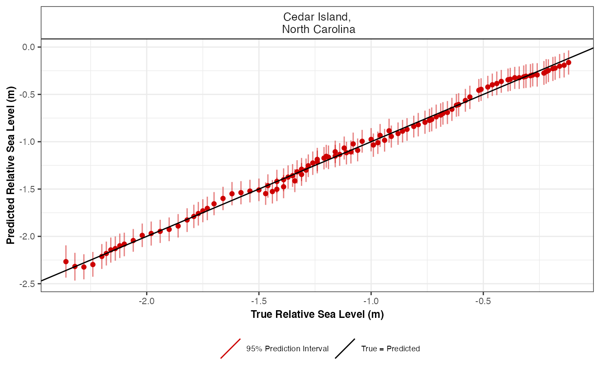

R/cross_val_check.R
cross_val_check.RdCross validation check for spline in time, spline in space time and GAM in order to select the most appropriate number of knots when creating basis functions.
cross_val_check(
data,
prediction_grid_res = 50,
spline_nseg = NULL,
spline_nseg_t = 20,
spline_nseg_st = 6,
n_iterations = 1000,
n_burnin = 100,
n_thin = 5,
n_chains = 2,
model_type,
n_fold = 5,
seed = NULL,
CI = 0.95
)Raw input data
Resolution of grid. Predictions over every 50 years(default) can vary based on user preference, as larger values will reduce computational run time.
This setting is focused on the Noisy Input Spline model. It provides the number of segments used to create basis functions.
This setting is focused on the Noisy Input Generalised Additive Model. It provides the number of segments used to create basis functions.
This setting is focused on the Noisy Input Generalised Additive Model. It provides the number of segments used to create basis functions.
Number of iterations. Increasing this value will increase the computational run time.
Size of burn-in. This number removes a certain number of samples at the beginning.
Amount of thinning.
Number of MCMC chains. The number of times the model will be run.
The user selects their statistical model type. The user can select a Noisy Input Spline in Time using "ni_spline_t". The user can select a Noisy Input Spline in Space Time using "ni_spline_st". The user can select a Noisy Input Generalised Additive Model using "ni_gam_decomp".
Number of folds required in the cross validation. The default is 5 fold cross validation.
If the user wants reproducible results, seed stores the output when random selection was used in the creation of the cross validation.
Size of the credible interval required by the user. The default is 0.95 corresponding to 95%.
A list containing the model comparison measures, e.g. Root Mean Square Error (RMSE), and plot of true vs predicted values
# \donttest{
data <- NAACproxydata %>% dplyr::filter(Site == "Cedar Island")
cross_val_check(data = data, model_type = "ni_spline_t",n_fold = 2)
#> module glm loaded
#> Compiling model graph
#> Resolving undeclared variables
#> Allocating nodes
#> Graph information:
#> Observed stochastic nodes: 52
#> Unobserved stochastic nodes: 15
#> Total graph size: 915
#>
#> Initializing model
#>
#> Compiling model graph
#> Resolving undeclared variables
#> Allocating nodes
#> Graph information:
#> Observed stochastic nodes: 52
#> Unobserved stochastic nodes: 122
#> Total graph size: 5494
#>
#> Initializing model
#>
#> No convergence issues detected.
#> Compiling model graph
#> Resolving undeclared variables
#> Allocating nodes
#> Graph information:
#> Observed stochastic nodes: 52
#> Unobserved stochastic nodes: 15
#> Total graph size: 915
#>
#> Initializing model
#>
#> Compiling model graph
#> Resolving undeclared variables
#> Allocating nodes
#> Graph information:
#> Observed stochastic nodes: 52
#> Unobserved stochastic nodes: 123
#> Total graph size: 5528
#>
#> Initializing model
#>
#> No convergence issues detected.
#> $ME_MAE_RSME_fold_site
#> # A tibble: 2 × 5
#> SiteName CV_fold_number RSME MAE ME
#> <fct> <fct> <dbl> <dbl> <dbl>
#> 1 "Cedar Island,\n North Carolina" 1 0.0506 0.0319 0.00702
#> 2 "Cedar Island,\n North Carolina" 2 0.0523 0.0345 -0.00725
#>
#> $ME_MAE_RSME_site
#> # A tibble: 1 × 4
#> SiteName RSME MAE ME
#> <fct> <dbl> <dbl> <dbl>
#> 1 "Cedar Island,\n North Carolina" 0.00118 0.0332 -0.000115
#>
#> $ME_MAE_RSME_overall
#> RSME MAE ME
#> 1 0.001177013 0.03315785 -0.0001154156
#>
#> $ME_MAE_RSME_fold
#> # A tibble: 2 × 4
#> CV_fold_number RSME MAE ME
#> <fct> <dbl> <dbl> <dbl>
#> 1 1 0.0506 0.0319 0.00702
#> 2 2 0.0523 0.0345 -0.00725
#>
#> $true_pred_plot

#>
#> $CV_model_df
#> Longitude Latitude SiteName data_type_id Age
#> 1 -76.38 34.971 Cedar Island,\n North Carolina ProxyRecord -800
#> 2 -76.38 34.971 Cedar Island,\n North Carolina ProxyRecord -661
#> 3 -76.38 34.971 Cedar Island,\n North Carolina ProxyRecord -211
#> 4 -76.38 34.971 Cedar Island,\n North Carolina ProxyRecord -174
#> 5 -76.38 34.971 Cedar Island,\n North Carolina ProxyRecord -143
#> 6 -76.38 34.971 Cedar Island,\n North Carolina ProxyRecord -112
#> 7 -76.38 34.971 Cedar Island,\n North Carolina ProxyRecord 46
#> 8 -76.38 34.971 Cedar Island,\n North Carolina ProxyRecord 73
#> 9 -76.38 34.971 Cedar Island,\n North Carolina ProxyRecord 153
#> 10 -76.38 34.971 Cedar Island,\n North Carolina ProxyRecord 229
#> 11 -76.38 34.971 Cedar Island,\n North Carolina ProxyRecord 505
#> 12 -76.38 34.971 Cedar Island,\n North Carolina ProxyRecord 604
#> 13 -76.38 34.971 Cedar Island,\n North Carolina ProxyRecord 605
#> 14 -76.38 34.971 Cedar Island,\n North Carolina ProxyRecord 623
#> 15 -76.38 34.971 Cedar Island,\n North Carolina ProxyRecord 625
#> 16 -76.38 34.971 Cedar Island,\n North Carolina ProxyRecord 672
#> 17 -76.38 34.971 Cedar Island,\n North Carolina ProxyRecord 745
#> 18 -76.38 34.971 Cedar Island,\n North Carolina ProxyRecord 818
#> 19 -76.38 34.971 Cedar Island,\n North Carolina ProxyRecord 825
#> 20 -76.38 34.971 Cedar Island,\n North Carolina ProxyRecord 883
#> 21 -76.38 34.971 Cedar Island,\n North Carolina ProxyRecord 895
#> 22 -76.38 34.971 Cedar Island,\n North Carolina ProxyRecord 1038
#> 23 -76.38 34.971 Cedar Island,\n North Carolina ProxyRecord 1057
#> 24 -76.38 34.971 Cedar Island,\n North Carolina ProxyRecord 1068
#> 25 -76.38 34.971 Cedar Island,\n North Carolina ProxyRecord 1093
#> 26 -76.38 34.971 Cedar Island,\n North Carolina ProxyRecord 1121
#> 27 -76.38 34.971 Cedar Island,\n North Carolina ProxyRecord 1146
#> 28 -76.38 34.971 Cedar Island,\n North Carolina ProxyRecord 1159
#> 29 -76.38 34.971 Cedar Island,\n North Carolina ProxyRecord 1178
#> 30 -76.38 34.971 Cedar Island,\n North Carolina ProxyRecord 1295
#> 31 -76.38 34.971 Cedar Island,\n North Carolina ProxyRecord 1322
#> 32 -76.38 34.971 Cedar Island,\n North Carolina ProxyRecord 1340
#> 33 -76.38 34.971 Cedar Island,\n North Carolina ProxyRecord 1543
#> 34 -76.38 34.971 Cedar Island,\n North Carolina ProxyRecord 1570
#> 35 -76.38 34.971 Cedar Island,\n North Carolina ProxyRecord 1603
#> 36 -76.38 34.971 Cedar Island,\n North Carolina ProxyRecord 1644
#> 37 -76.38 34.971 Cedar Island,\n North Carolina ProxyRecord 1669
#> 38 -76.38 34.971 Cedar Island,\n North Carolina ProxyRecord 1697
#> 39 -76.38 34.971 Cedar Island,\n North Carolina ProxyRecord 1725
#> 40 -76.38 34.971 Cedar Island,\n North Carolina ProxyRecord 1768
#> 41 -76.38 34.971 Cedar Island,\n North Carolina ProxyRecord 1864
#> 42 -76.38 34.971 Cedar Island,\n North Carolina ProxyRecord 1885
#> 43 -76.38 34.971 Cedar Island,\n North Carolina ProxyRecord 1898
#> 44 -76.38 34.971 Cedar Island,\n North Carolina ProxyRecord 1910
#> 45 -76.38 34.971 Cedar Island,\n North Carolina ProxyRecord 1913
#> 46 -76.38 34.971 Cedar Island,\n North Carolina ProxyRecord 1918
#> 47 -76.38 34.971 Cedar Island,\n North Carolina ProxyRecord 1937
#> 48 -76.38 34.971 Cedar Island,\n North Carolina ProxyRecord 1951
#> 49 -76.38 34.971 Cedar Island,\n North Carolina ProxyRecord 1957
#> 50 -76.38 34.971 Cedar Island,\n North Carolina ProxyRecord 1963
#> 51 -76.38 34.971 Cedar Island,\n North Carolina ProxyRecord 1979
#> 52 -76.38 34.971 Cedar Island,\n North Carolina ProxyRecord 1996
#> 53 -76.38 34.971 Cedar Island,\n North Carolina ProxyRecord -731
#> 54 -76.38 34.971 Cedar Island,\n North Carolina ProxyRecord -525
#> 55 -76.38 34.971 Cedar Island,\n North Carolina ProxyRecord -333
#> 56 -76.38 34.971 Cedar Island,\n North Carolina ProxyRecord -270
#> 57 -76.38 34.971 Cedar Island,\n North Carolina ProxyRecord -50
#> 58 -76.38 34.971 Cedar Island,\n North Carolina ProxyRecord 15
#> 59 -76.38 34.971 Cedar Island,\n North Carolina ProxyRecord 100
#> 60 -76.38 34.971 Cedar Island,\n North Carolina ProxyRecord 278
#> 61 -76.38 34.971 Cedar Island,\n North Carolina ProxyRecord 312
#> 62 -76.38 34.971 Cedar Island,\n North Carolina ProxyRecord 346
#> 63 -76.38 34.971 Cedar Island,\n North Carolina ProxyRecord 381
#> 64 -76.38 34.971 Cedar Island,\n North Carolina ProxyRecord 434
#> 65 -76.38 34.971 Cedar Island,\n North Carolina ProxyRecord 568
#> 66 -76.38 34.971 Cedar Island,\n North Carolina ProxyRecord 572
#> 67 -76.38 34.971 Cedar Island,\n North Carolina ProxyRecord 586
#> 68 -76.38 34.971 Cedar Island,\n North Carolina ProxyRecord 659
#> 69 -76.38 34.971 Cedar Island,\n North Carolina ProxyRecord 725
#> 70 -76.38 34.971 Cedar Island,\n North Carolina ProxyRecord 763
#> 71 -76.38 34.971 Cedar Island,\n North Carolina ProxyRecord 789
#> 72 -76.38 34.971 Cedar Island,\n North Carolina ProxyRecord 860
#> 73 -76.38 34.971 Cedar Island,\n North Carolina ProxyRecord 941
#> 74 -76.38 34.971 Cedar Island,\n North Carolina ProxyRecord 983
#> 75 -76.38 34.971 Cedar Island,\n North Carolina ProxyRecord 1002
#> 76 -76.38 34.971 Cedar Island,\n North Carolina ProxyRecord 1082
#> 77 -76.38 34.971 Cedar Island,\n North Carolina ProxyRecord 1155
#> 78 -76.38 34.971 Cedar Island,\n North Carolina ProxyRecord 1219
#> 79 -76.38 34.971 Cedar Island,\n North Carolina ProxyRecord 1267
#> 80 -76.38 34.971 Cedar Island,\n North Carolina ProxyRecord 1287
#> 81 -76.38 34.971 Cedar Island,\n North Carolina ProxyRecord 1354
#> 82 -76.38 34.971 Cedar Island,\n North Carolina ProxyRecord 1389
#> 83 -76.38 34.971 Cedar Island,\n North Carolina ProxyRecord 1408
#> 84 -76.38 34.971 Cedar Island,\n North Carolina ProxyRecord 1436
#> 85 -76.38 34.971 Cedar Island,\n North Carolina ProxyRecord 1460
#> 86 -76.38 34.971 Cedar Island,\n North Carolina ProxyRecord 1468
#> 87 -76.38 34.971 Cedar Island,\n North Carolina ProxyRecord 1490
#> 88 -76.38 34.971 Cedar Island,\n North Carolina ProxyRecord 1525
#> 89 -76.38 34.971 Cedar Island,\n North Carolina ProxyRecord 1590
#> 90 -76.38 34.971 Cedar Island,\n North Carolina ProxyRecord 1626
#> 91 -76.38 34.971 Cedar Island,\n North Carolina ProxyRecord 1653
#> 92 -76.38 34.971 Cedar Island,\n North Carolina ProxyRecord 1736
#> 93 -76.38 34.971 Cedar Island,\n North Carolina ProxyRecord 1790
#> 94 -76.38 34.971 Cedar Island,\n North Carolina ProxyRecord 1840
#> 95 -76.38 34.971 Cedar Island,\n North Carolina ProxyRecord 1846
#> 96 -76.38 34.971 Cedar Island,\n North Carolina ProxyRecord 1874
#> 97 -76.38 34.971 Cedar Island,\n North Carolina ProxyRecord 1923
#> 98 -76.38 34.971 Cedar Island,\n North Carolina ProxyRecord 1927
#> 99 -76.38 34.971 Cedar Island,\n North Carolina ProxyRecord 1930
#> 100 -76.38 34.971 Cedar Island,\n North Carolina ProxyRecord 1934
#> 101 -76.38 34.971 Cedar Island,\n North Carolina ProxyRecord 1941
#> 102 -76.38 34.971 Cedar Island,\n North Carolina ProxyRecord 1974
#> 103 -76.38 34.971 Cedar Island,\n North Carolina ProxyRecord 1988
#> 104 -76.38 34.971 Cedar Island,\n North Carolina ProxyRecord 2005
#> true_RSL Age_err RSL_err CV_fold test_set NI_var_grid_term pred_RSL
#> 1 -2.36 65.25 0.06 1 test_set 0.0002664112 -2.2856579
#> 2 -2.28 47.75 0.06 1 test_set 0.0002123298 -2.2963784
#> 3 -2.16 40.25 0.06 1 test_set 0.0013410751 -2.1419665
#> 4 -2.14 46.00 0.06 1 test_set 0.0014009482 -2.1196809
#> 5 -2.12 44.00 0.06 1 test_set 0.0014472592 -2.1002065
#> 6 -2.10 42.50 0.06 1 test_set 0.0014900571 -2.0800558
#> 7 -1.98 33.00 0.06 1 test_set 0.0016536074 -1.9687642
#> 8 -1.94 35.50 0.06 1 test_set 0.0016724261 -1.9486248
#> 9 -1.86 55.50 0.06 1 test_set 0.0017125393 -1.8876939
#> 10 -1.82 74.50 0.06 1 test_set 0.0017322396 -1.8286768
#> 11 -1.66 64.75 0.06 1 test_set 0.0017597641 -1.6103789
#> 12 -1.54 18.50 0.06 1 test_set 0.0017543568 -1.5318847
#> 13 -1.44 62.25 0.06 1 test_set 0.0017542610 -1.5310943
#> 14 -1.50 15.25 0.06 1 test_set 0.0017523963 -1.5168782
#> 15 -1.42 62.25 0.06 1 test_set 0.0017521726 -1.5153001
#> 16 -1.46 36.75 0.06 1 test_set 0.0017459687 -1.4783074
#> 17 -1.34 60.75 0.06 1 test_set 0.0017327274 -1.4212917
#> 18 -1.35 45.00 0.06 1 test_set 0.0017150994 -1.3649745
#> 19 -1.31 65.50 0.06 1 test_set 0.0017131786 -1.3596177
#> 20 -1.29 65.75 0.06 1 test_set 0.0016957113 -1.3155662
#> 21 -1.31 49.00 0.06 1 test_set 0.0016917517 -1.3065316
#> 22 -1.24 61.00 0.06 1 test_set 0.0016354430 -1.2013365
#> 23 -1.21 56.75 0.06 1 test_set 0.0016266946 -1.1877445
#> 24 -1.19 53.75 0.06 1 test_set 0.0016214939 -1.1799212
#> 25 -1.16 45.50 0.06 1 test_set 0.0016093036 -1.1622697
#> 26 -1.14 38.75 0.06 1 test_set 0.0015983909 -1.1427042
#> 27 -1.11 36.50 0.06 1 test_set 0.0015937657 -1.1253632
#> 28 -1.09 36.50 0.06 1 test_set 0.0015932688 -1.1163731
#> 29 -1.06 36.00 0.06 1 test_set 0.0015948911 -1.1032454
#> 30 -0.97 42.00 0.06 1 test_set 0.0016663466 -1.0212158
#> 31 -1.04 17.75 0.06 1 test_set 0.0016978550 -1.0015953
#> 32 -0.94 39.75 0.06 1 test_set 0.0017219895 -0.9882882
#> 33 -0.79 25.25 0.06 1 test_set 0.0021674702 -0.8186421
#> 34 -0.76 24.25 0.06 1 test_set 0.0022507094 -0.7923977
#> 35 -0.73 23.50 0.06 1 test_set 0.0023600946 -0.7588191
#> 36 -0.69 29.00 0.06 1 test_set 0.0025077173 -0.7146054
#> 37 -0.66 30.50 0.06 1 test_set 0.0026041047 -0.6861860
#> 38 -0.64 26.25 0.06 1 test_set 0.0027177911 -0.6529552
#> 39 -0.62 24.75 0.06 1 test_set 0.0028375344 -0.6181641
#> 40 -0.58 19.50 0.06 1 test_set 0.0030332190 -0.5615060
#> 41 -0.48 14.00 0.06 1 test_set 0.0035216418 -0.4194954
#> 42 -0.44 10.25 0.06 1 test_set 0.0036379752 -0.3853253
#> 43 -0.42 6.75 0.06 1 test_set 0.0037116985 -0.3635775
#> 44 -0.39 5.25 0.06 1 test_set 0.0037809096 -0.3430901
#> 45 -0.38 5.75 0.06 1 test_set 0.0037983863 -0.3379056
#> 46 -0.36 7.00 0.06 1 test_set 0.0038276684 -0.3292085
#> 47 -0.28 8.00 0.06 1 test_set 0.0039407022 -0.2955112
#> 48 -0.23 7.75 0.06 1 test_set 0.0040257749 -0.2700135
#> 49 -0.22 7.00 0.06 1 test_set 0.0040626981 -0.2589094
#> 50 -0.21 5.50 0.06 1 test_set 0.0040998995 -0.2476983
#> 51 -0.18 5.75 0.06 1 test_set 0.0042004629 -0.2172721
#> 52 -0.14 2.00 0.06 1 test_set 0.0043094785 -0.1840864
#> 53 -2.32 36.25 0.06 2 test_set 0.0001060044 -2.3350919
#> 54 -2.24 65.00 0.06 2 test_set 0.0006067928 -2.3152639
#> 55 -2.20 35.00 0.06 2 test_set 0.0011009929 -2.2336263
#> 56 -2.18 26.25 0.06 2 test_set 0.0012273805 -2.1966163
#> 57 -2.06 41.00 0.06 2 test_set 0.0015301008 -2.0399566
#> 58 -2.02 27.50 0.06 2 test_set 0.0015782915 -1.9881719
#> 59 -1.90 37.25 0.06 2 test_set 0.0016129198 -1.9186147
#> 60 -1.79 78.50 0.06 2 test_set 0.0016216551 -1.7714480
#> 61 -1.77 79.75 0.06 2 test_set 0.0016205838 -1.7434129
#> 62 -1.75 79.50 0.06 2 test_set 0.0016187528 -1.7154385
#> 63 -1.73 78.50 0.06 2 test_set 0.0016160743 -1.6867202
#> 64 -1.70 75.25 0.06 2 test_set 0.0016104858 -1.6434205
#> 65 -1.62 32.25 0.06 2 test_set 0.0015881221 -1.5353054
#> 66 -1.47 61.00 0.06 2 test_set 0.0015872732 -1.5321147
#> 67 -1.58 26.25 0.06 2 test_set 0.0015842190 -1.5209661
#> 68 -1.39 60.25 0.06 2 test_set 0.0015662067 -1.4633520
#> 69 -1.42 41.25 0.06 2 test_set 0.0015469071 -1.4120982
#> 70 -1.39 43.75 0.06 2 test_set 0.0015344965 -1.3829922
#> 71 -1.37 44.75 0.06 2 test_set 0.0015254583 -1.3632613
#> 72 -1.33 44.75 0.06 2 test_set 0.0014985139 -1.3101989
#> 73 -1.28 51.50 0.06 2 test_set 0.0014637287 -1.2512633
#> 74 -1.26 62.25 0.06 2 test_set 0.0014439944 -1.2214385
#> 75 -1.24 50.50 0.06 2 test_set 0.0014346861 -1.2081215
#> 76 -1.20 40.25 0.06 2 test_set 0.0013940388 -1.1533123
#> 77 -1.16 43.75 0.06 2 test_set 0.0013804213 -1.1047092
#> 78 -1.12 39.50 0.06 2 test_set 0.0013966657 -1.0621668
#> 79 -0.99 44.25 0.06 2 test_set 0.0014261291 -1.0296994
#> 80 -1.08 19.75 0.06 2 test_set 0.0014427770 -1.0159208
#> 81 -1.00 20.25 0.06 2 test_set 0.0015172834 -0.9682118
#> 82 -0.91 31.00 0.06 2 test_set 0.0015676798 -0.9420757
#> 83 -0.96 85.75 0.06 2 test_set 0.0015983357 -0.9274635
#> 84 -0.88 30.50 0.06 2 test_set 0.0016477428 -0.9053205
#> 85 -0.86 27.25 0.06 2 test_set 0.0016941032 -0.8857094
#> 86 -0.92 120.50 0.06 2 test_set 0.0017103796 -0.8790335
#> 87 -0.84 25.50 0.06 2 test_set 0.0017572609 -0.8602954
#> 88 -0.81 26.00 0.06 2 test_set 0.0018382574 -0.8292590
#> 89 -0.74 23.25 0.06 2 test_set 0.0020095724 -0.7671462
#> 90 -0.71 26.00 0.06 2 test_set 0.0021161418 -0.7299430
#> 91 -0.68 29.50 0.06 2 test_set 0.0022015363 -0.7005977
#> 92 -0.61 23.75 0.06 2 test_set 0.0024933921 -0.6018361
#> 93 -0.56 16.50 0.06 2 test_set 0.0027070535 -0.5299169
#> 94 -0.52 14.00 0.06 2 test_set 0.0029216025 -0.4573484
#> 95 -0.51 14.75 0.06 2 test_set 0.0029484284 -0.4482317
#> 96 -0.46 12.75 0.06 2 test_set 0.0030766759 -0.4044806
#> 97 -0.34 7.50 0.06 2 test_set 0.0033132366 -0.3229465
#> 98 -0.32 8.00 0.06 2 test_set 0.0033332291 -0.3160010
#> 99 -0.31 8.25 0.06 2 test_set 0.0033482910 -0.3107625
#> 100 -0.29 8.00 0.06 2 test_set 0.0033684635 -0.3037384
#> 101 -0.26 7.75 0.06 2 test_set 0.0034040129 -0.2913373
#> 102 -0.19 5.50 0.06 2 test_set 0.0035758458 -0.2309715
#> 103 -0.16 5.00 0.06 2 test_set 0.0036508596 -0.2043914
#> 104 -0.12 2.25 0.06 2 test_set 0.0037428564 -0.1713197
#> upr lwr y_post_pred upr_PI lwr_PI CI CV_fold_number
#> 1 -2.4283142 -2.1483019 -2.2797988 -2.4785261 -2.09245947 95% 1
#> 2 -2.3808364 -2.2214143 -2.2977979 -2.4330108 -2.16019222 95% 1
#> 3 -2.1979738 -2.0789908 -2.1418220 -2.2650360 -2.01448402 95% 1
#> 4 -2.1709416 -2.0588144 -2.1215579 -2.2438031 -1.99627975 95% 1
#> 5 -2.1491010 -2.0431262 -2.1055287 -2.2426949 -1.98232398 95% 1
#> 6 -2.1271938 -2.0258634 -2.0842733 -2.2102602 -1.96121787 95% 1
#> 7 -2.0086463 -1.9244124 -1.9695807 -2.1009932 -1.84584266 95% 1
#> 8 -1.9880824 -1.9068777 -1.9416948 -2.0672737 -1.82186262 95% 1
#> 9 -1.9281550 -1.8485800 -1.8897181 -2.0089237 -1.76896937 95% 1
#> 10 -1.8699324 -1.7889046 -1.8300531 -1.9556005 -1.72140306 95% 1
#> 11 -1.6452776 -1.5742759 -1.6087471 -1.7476377 -1.48694045 95% 1
#> 12 -1.5614121 -1.4986325 -1.5292745 -1.6606959 -1.38569755 95% 1
#> 13 -1.5605416 -1.4978680 -1.5295132 -1.6371530 -1.40979360 95% 1
#> 14 -1.5448708 -1.4841517 -1.5170571 -1.6382993 -1.38808547 95% 1
#> 15 -1.5431297 -1.4826349 -1.5137607 -1.6427838 -1.40592995 95% 1
#> 16 -1.5069640 -1.4476130 -1.4846194 -1.6161565 -1.36969039 95% 1
#> 17 -1.4506311 -1.3885051 -1.4192808 -1.5239216 -1.29324706 95% 1
#> 18 -1.3953825 -1.3306756 -1.3626960 -1.4813565 -1.24365015 95% 1
#> 19 -1.3902682 -1.3251989 -1.3583724 -1.4806696 -1.23823848 95% 1
#> 20 -1.3479906 -1.2790238 -1.3159777 -1.4510487 -1.19161758 95% 1
#> 21 -1.3392626 -1.2692666 -1.3103072 -1.4379024 -1.17369975 95% 1
#> 22 -1.2358152 -1.1622869 -1.1975018 -1.3070852 -1.06874717 95% 1
#> 23 -1.2214917 -1.1490354 -1.1894340 -1.3151427 -1.05971432 95% 1
#> 24 -1.2141266 -1.1413816 -1.1785389 -1.2841374 -1.06188182 95% 1
#> 25 -1.1966003 -1.1245205 -1.1563330 -1.2894864 -1.03141798 95% 1
#> 26 -1.1770134 -1.1059402 -1.1314358 -1.2699267 -0.99068363 95% 1
#> 27 -1.1585522 -1.0891613 -1.1255640 -1.2373866 -1.00531134 95% 1
#> 28 -1.1496497 -1.0807595 -1.1139321 -1.2355108 -0.99509253 95% 1
#> 29 -1.1365486 -1.0685735 -1.1062343 -1.2342632 -0.97957096 95% 1
#> 30 -1.0521554 -0.9914664 -1.0201060 -1.1350788 -0.89994841 95% 1
#> 31 -1.0323778 -0.9719655 -1.0052137 -1.1287264 -0.87197255 95% 1
#> 32 -1.0187094 -0.9585761 -0.9869708 -1.1065937 -0.86854746 95% 1
#> 33 -0.8524938 -0.7822651 -0.8179860 -0.9372616 -0.69204953 95% 1
#> 34 -0.8270588 -0.7554579 -0.7878969 -0.9204092 -0.65890214 95% 1
#> 35 -0.7947574 -0.7228214 -0.7565458 -0.8754626 -0.63171850 95% 1
#> 36 -0.7508267 -0.6761712 -0.7125473 -0.8252930 -0.58975256 95% 1
#> 37 -0.7218433 -0.6498383 -0.6849612 -0.8121796 -0.55997037 95% 1
#> 38 -0.6881620 -0.6193923 -0.6534168 -0.7842210 -0.52553337 95% 1
#> 39 -0.6522496 -0.5859020 -0.6148834 -0.7328592 -0.50417689 95% 1
#> 40 -0.5923569 -0.5308249 -0.5625586 -0.6814137 -0.43578305 95% 1
#> 41 -0.4524356 -0.3889268 -0.4162769 -0.5546928 -0.28994867 95% 1
#> 42 -0.4186784 -0.3543505 -0.3841807 -0.5085813 -0.25592995 95% 1
#> 43 -0.3971078 -0.3309381 -0.3670550 -0.4935481 -0.24529200 95% 1
#> 44 -0.3775717 -0.3102056 -0.3375489 -0.4554580 -0.20576025 95% 1
#> 45 -0.3724837 -0.3053847 -0.3407897 -0.4547090 -0.22060697 95% 1
#> 46 -0.3639253 -0.2966261 -0.3260779 -0.4513503 -0.20102195 95% 1
#> 47 -0.3337779 -0.2589461 -0.2945871 -0.4249321 -0.17808429 95% 1
#> 48 -0.3099844 -0.2294585 -0.2759450 -0.3969794 -0.15036593 95% 1
#> 49 -0.2992599 -0.2177598 -0.2600771 -0.3797516 -0.14055266 95% 1
#> 50 -0.2887745 -0.2065306 -0.2466578 -0.3697795 -0.13129445 95% 1
#> 51 -0.2618381 -0.1699548 -0.2172641 -0.3371447 -0.08729375 95% 1
#> 52 -0.2331903 -0.1292661 -0.1846488 -0.3155831 -0.06702231 95% 1
#> 53 -2.4155362 -2.2583273 -2.3397026 -2.4754324 -2.20054972 95% 2
#> 54 -2.3881829 -2.2408044 -2.3154661 -2.4679459 -2.17428611 95% 2
#> 55 -2.3060943 -2.1594188 -2.2294061 -2.3596620 -2.10381176 95% 2
#> 56 -2.2570162 -2.1300915 -2.1938377 -2.3330153 -2.04573336 95% 2
#> 57 -2.0807893 -2.0002950 -2.0423850 -2.1643610 -1.91472309 95% 2
#> 58 -2.0294058 -1.9491720 -1.9894045 -2.1199860 -1.85551822 95% 2
#> 59 -1.9624685 -1.8772980 -1.9221931 -2.0547214 -1.81175594 95% 2
#> 60 -1.8189211 -1.7238507 -1.7715651 -1.8908369 -1.63031560 95% 2
#> 61 -1.7918753 -1.6945765 -1.7446515 -1.8812123 -1.59951663 95% 2
#> 62 -1.7637136 -1.6673340 -1.7170069 -1.8333751 -1.60011649 95% 2
#> 63 -1.7330981 -1.6397351 -1.6866036 -1.8059810 -1.56358298 95% 2
#> 64 -1.6883020 -1.6011910 -1.6453554 -1.7718637 -1.52258545 95% 2
#> 65 -1.5733474 -1.4967342 -1.5373426 -1.6541597 -1.41950514 95% 2
#> 66 -1.5699001 -1.4938791 -1.5317597 -1.6475531 -1.40739548 95% 2
#> 67 -1.5576385 -1.4832317 -1.5207636 -1.6413945 -1.38975456 95% 2
#> 68 -1.4980075 -1.4298398 -1.4633125 -1.5779218 -1.35320408 95% 2
#> 69 -1.4429051 -1.3821791 -1.4085396 -1.5230137 -1.28511990 95% 2
#> 70 -1.4131381 -1.3535800 -1.3863371 -1.5215584 -1.27148295 95% 2
#> 71 -1.3931761 -1.3352593 -1.3644309 -1.4863305 -1.24419419 95% 2
#> 72 -1.3394967 -1.2806449 -1.3100290 -1.4276475 -1.18419562 95% 2
#> 73 -1.2816146 -1.2209335 -1.2546802 -1.3720127 -1.13494631 95% 2
#> 74 -1.2513853 -1.1900675 -1.2241846 -1.3576761 -1.10736504 95% 2
#> 75 -1.2376372 -1.1771222 -1.2058431 -1.3210026 -1.08288075 95% 2
#> 76 -1.1824532 -1.1236450 -1.1578512 -1.2828018 -1.03328579 95% 2
#> 77 -1.1330234 -1.0756336 -1.1073691 -1.2205459 -0.99327797 95% 2
#> 78 -1.0896545 -1.0353369 -1.0689560 -1.1978701 -0.96017385 95% 2
#> 79 -1.0572465 -1.0008205 -1.0332706 -1.1519408 -0.89683658 95% 2
#> 80 -1.0438112 -0.9869930 -1.0131130 -1.1269478 -0.88426872 95% 2
#> 81 -0.9970434 -0.9382332 -0.9709189 -1.0888438 -0.85228891 95% 2
#> 82 -0.9722449 -0.9104462 -0.9396673 -1.0550348 -0.82505214 95% 2
#> 83 -0.9580163 -0.8958625 -0.9280362 -1.0568191 -0.80388182 95% 2
#> 84 -0.9362889 -0.8745002 -0.9021218 -1.0274464 -0.76298915 95% 2
#> 85 -0.9189656 -0.8535709 -0.8854645 -1.0132677 -0.76151822 95% 2
#> 86 -0.9121445 -0.8464642 -0.8718560 -0.9780185 -0.74750848 95% 2
#> 87 -0.8932290 -0.8275372 -0.8646013 -0.9959441 -0.73259313 95% 2
#> 88 -0.8636901 -0.7949169 -0.8366272 -0.9719163 -0.71446934 95% 2
#> 89 -0.8037334 -0.7313926 -0.7655351 -0.8814098 -0.64495190 95% 2
#> 90 -0.7664926 -0.6938545 -0.7277391 -0.8510811 -0.59908621 95% 2
#> 91 -0.7370883 -0.6644054 -0.7032804 -0.8220619 -0.57276921 95% 2
#> 92 -0.6356413 -0.5678724 -0.6068494 -0.7218539 -0.47536150 95% 2
#> 93 -0.5599281 -0.4994988 -0.5328693 -0.6652010 -0.39319381 95% 2
#> 94 -0.4851453 -0.4302439 -0.4600436 -0.5818036 -0.34801785 95% 2
#> 95 -0.4760349 -0.4211628 -0.4496785 -0.5727492 -0.31782544 95% 2
#> 96 -0.4333463 -0.3780571 -0.4066025 -0.5315724 -0.27348945 95% 2
#> 97 -0.3560061 -0.2930784 -0.3174384 -0.4402447 -0.17955722 95% 2
#> 98 -0.3494827 -0.2854363 -0.3202292 -0.4404928 -0.19744415 95% 2
#> 99 -0.3445630 -0.2800004 -0.3116684 -0.4437994 -0.19177961 95% 2
#> 100 -0.3379667 -0.2726283 -0.3020679 -0.4143194 -0.17884990 95% 2
#> 101 -0.3289917 -0.2591347 -0.2906891 -0.4110876 -0.17196820 95% 2
#> 102 -0.2767580 -0.1909829 -0.2364904 -0.3470988 -0.11711007 95% 2
#> 103 -0.2531401 -0.1585742 -0.2036956 -0.3358682 -0.08122514 95% 2
#> 104 -0.2260159 -0.1177119 -0.1720438 -0.2950304 -0.05462769 95% 2
#> obs_in_PI
#> 1 TRUE
#> 2 TRUE
#> 3 TRUE
#> 4 TRUE
#> 5 TRUE
#> 6 TRUE
#> 7 TRUE
#> 8 TRUE
#> 9 TRUE
#> 10 TRUE
#> 11 TRUE
#> 12 TRUE
#> 13 TRUE
#> 14 TRUE
#> 15 TRUE
#> 16 TRUE
#> 17 TRUE
#> 18 TRUE
#> 19 TRUE
#> 20 TRUE
#> 21 TRUE
#> 22 TRUE
#> 23 TRUE
#> 24 TRUE
#> 25 TRUE
#> 26 TRUE
#> 27 TRUE
#> 28 TRUE
#> 29 TRUE
#> 30 TRUE
#> 31 TRUE
#> 32 TRUE
#> 33 TRUE
#> 34 TRUE
#> 35 TRUE
#> 36 TRUE
#> 37 TRUE
#> 38 TRUE
#> 39 TRUE
#> 40 TRUE
#> 41 TRUE
#> 42 TRUE
#> 43 TRUE
#> 44 TRUE
#> 45 TRUE
#> 46 TRUE
#> 47 TRUE
#> 48 TRUE
#> 49 TRUE
#> 50 TRUE
#> 51 TRUE
#> 52 TRUE
#> 53 TRUE
#> 54 TRUE
#> 55 TRUE
#> 56 TRUE
#> 57 TRUE
#> 58 TRUE
#> 59 TRUE
#> 60 TRUE
#> 61 TRUE
#> 62 TRUE
#> 63 TRUE
#> 64 TRUE
#> 65 TRUE
#> 66 TRUE
#> 67 TRUE
#> 68 TRUE
#> 69 TRUE
#> 70 TRUE
#> 71 TRUE
#> 72 TRUE
#> 73 TRUE
#> 74 TRUE
#> 75 TRUE
#> 76 TRUE
#> 77 TRUE
#> 78 TRUE
#> 79 TRUE
#> 80 TRUE
#> 81 TRUE
#> 82 TRUE
#> 83 TRUE
#> 84 TRUE
#> 85 TRUE
#> 86 TRUE
#> 87 TRUE
#> 88 TRUE
#> 89 TRUE
#> 90 TRUE
#> 91 TRUE
#> 92 TRUE
#> 93 TRUE
#> 94 TRUE
#> 95 TRUE
#> 96 TRUE
#> 97 TRUE
#> 98 TRUE
#> 99 TRUE
#> 100 TRUE
#> 101 TRUE
#> 102 TRUE
#> 103 TRUE
#> 104 TRUE
#>
#> $total_coverage
#> [1] 1
#>
#> $prediction_interval_size
#> # A tibble: 1 × 2
#> SiteName PI_width
#> <fct> <dbl>
#> 1 "Cedar Island,\n North Carolina" -0.250
#>
#> $coverage_by_site
#> # A tibble: 1 × 2
#> SiteName coverage_by_site
#> <fct> <dbl>
#> 1 "Cedar Island,\n North Carolina" 1
#>
# }